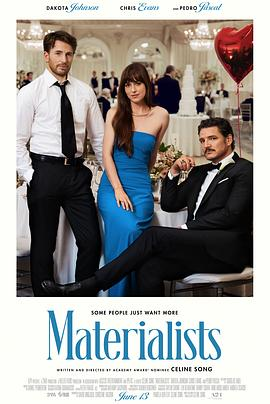

5.8
物质主义者
Materialists
2025
美国
评分 5.8
导演:
席琳·宋
演员:
达科塔·约翰逊 / 克里斯·埃文斯 / 佩德罗·帕斯卡 / 佐伊·温特斯 / 马琳·爱尔兰 / 达莎·内克拉索娃 / 路易莎·雅格布森
类型:
喜剧,爱情
剧情简介
在闪耀的纽约上东区，露西（达科塔·约翰逊 饰）是一位为富豪客户提供“爱情策略”的高级恋爱顾问。她熟悉算法、社交心理和欲望经济学，擅长用理性拆解浪漫，用金钱量化幸福。事业蒸蒸日上之际，她意外陷入一场自己无法理清的三角关系——理想主义的旧爱诺亚（克里斯·埃文斯 饰）与完美得近乎设计师产品的男友加布里埃尔（佩德罗·帕斯卡 饰），一个让她心动，一个让她安心。影片以席琳·宋标志性的温柔镜头捕捉都市的孤独：奢华公寓的落地窗外，是孤单闪烁的霓虹；昂贵餐厅的对话间隙，是掩不住的叹息。露西在为客户修补爱情的同时，却逐渐失去对爱情的感知。她看似精明干练，实则被自己制定的规则困住——“找到理想伴侣的关键，是忘记理想本身。”当加布里埃尔求婚那一夜，露西在派对灯光下失神，她看到诺亚正在街头为一对情侣弹琴，那一刻她明白自己所有的成功，皆源于逃避。影片在温柔的对白与细腻的光影中展开对现代情感的拷问：在一个以效率与利益定义幸福的社会，爱情是否仍有不可量化的价值？席琳·宋延续《过去的我们》的情感脉络，以诗意现实主义的笔触描绘人类在物质洪流中的脆弱与温度。纽约成为一座镜子，折射每个被选择吞没的灵魂。达科塔·约翰逊以极其细腻的表演展现女性的克制与觉醒，而克里斯·埃文斯与佩德罗·帕斯卡的对立气质，让整部电影兼具理性张力与浪漫余韵。《物质主义者》并非爱情童话，而是一封写给现代人的情感自白。露西最终发现，爱情无法被设计，也无法被证明——它只是存在，哪怕不合逻辑、不够聪明，也足够真实。